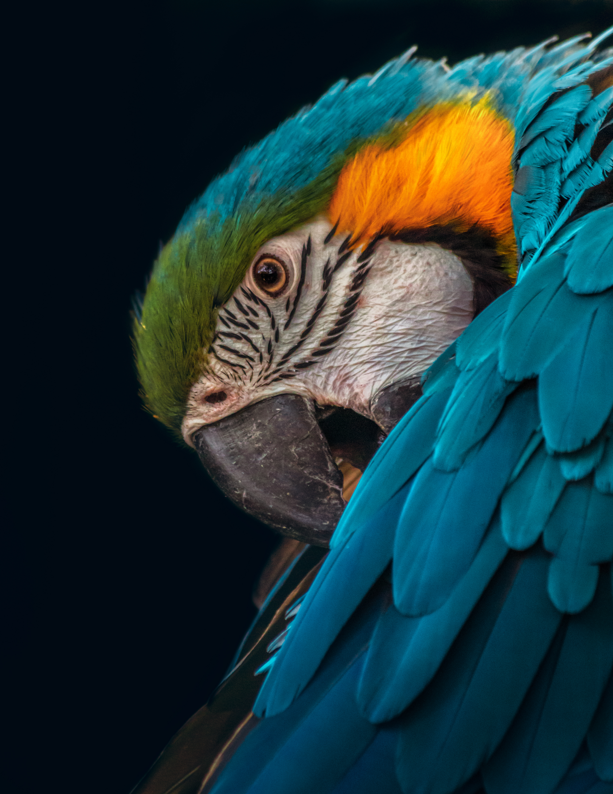

SMK Muhammadiyah 1 Kalasan adalah sekolah kejuruan unggulan yang membentuk siswa disiplin, berakhlak, kompeten, dan siap menghadapi tantangan global di dunia pelayaran maupun industri kreatif.
SMK Muhammadiyah 1 Kalasan adalah sekolah kejuruan unggulan yang berfokus pada bidang pelayaran dan seni modern. Kami membentuk siswa yang profesional, disiplin, dan siap kerja.
Dengan fasilitas lengkap, tenaga pendidik berpengalaman, dan kurikulum berbasis industri, kami siap mencetak generasi berdaya saing global.


Assalamu’alaikum warahmatullahi wabarakatuh.
Selamat datang di SMK Muhammadiyah 1 Kalasan. Kami berkomitmen memberikan pendidikan berkualitas serta membentuk karakter siswa yang unggul dan berakhlak.
Semoga website ini menjadi media informasi yang bermanfaat bagi seluruh masyarakat.
Mencetak lulusan profesional, berkarakter, dan siap bersaing di tingkat nasional maupun internasional.
Jurusan Nautika Kapal Niaga adalah program keahlian yang mempersiapkan siswa menjadi perwira kapal bagian dek (deck officer) yang bertanggung jawab dalam navigasi, keselamatan pelayaran, dan pengoperasian kapal niaga.
Siswa akan mempelajari ilmu navigasi modern, membaca peta laut, sistem radar dan GPS, meteorologi pelayaran, manajemen muatan, serta prosedur keselamatan internasional sesuai standar IMO.
Selain teori, siswa juga dibekali praktik simulator navigasi, latihan kedisiplinan maritim, pelatihan kepemimpinan, serta pembentukan karakter tangguh dan disiplin tinggi.
Lulusan Nautika berpeluang bekerja sebagai Perwira Dek, Nahkoda setelah jenjang karir, Petugas Pelabuhan, maupun melanjutkan pendidikan ke perguruan tinggi pelayaran.
Jurusan Teknika Kapal Niaga mempersiapkan siswa menjadi tenaga ahli mesin kapal yang bertanggung jawab atas pengoperasian, perawatan, dan perbaikan seluruh sistem permesinan kapal.
Siswa mempelajari sistem mesin diesel kapal, instalasi listrik kapal, sistem pendingin, sistem bahan bakar, hidrolik, serta teknologi mesin modern berbasis kontrol otomatis.
Pembelajaran dilakukan melalui praktik bengkel, simulasi mesin kapal, dan pelatihan troubleshooting agar siswa mampu menangani masalah teknis di lapangan.
Lulusan Teknika memiliki peluang karir sebagai Masinis Kapal, Teknisi Mesin Industri, Engineer di perusahaan pelayaran, maupun melanjutkan studi ke akademi teknik.
Jurusan Seni Musik Modern bertujuan mengembangkan kreativitas dan bakat siswa di bidang musik kontemporer, produksi audio, dan industri kreatif modern.
Siswa mempelajari teori musik, komposisi lagu, teknik vokal profesional, permainan alat musik modern, aransemen, hingga produksi rekaman menggunakan software digital.
Dengan dukungan studio musik dan peralatan profesional, siswa dilatih untuk tampil percaya diri, berkolaborasi dalam band, serta memahami manajemen industri hiburan.
Lulusan Seni Musik Modern dapat berkarir sebagai Musisi Profesional, Sound Engineer, Music Producer, Content Creator, maupun melanjutkan pendidikan seni di perguruan tinggi.
Momen kebersamaan, kedisiplinan, dan kegiatan unggulan taruna kami.
